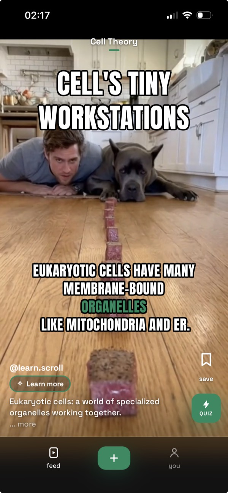
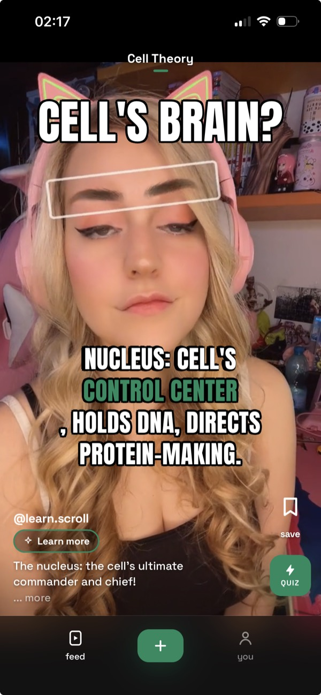

Turn any PDF into TikTok-style study videos.
You were going to study. You ended up on TikTok. LearnScroll turns your notes, slides and PDFs into a feed you can't stop scrolling, except everything in it is on your exam.


Real feed made from one uploaded biology PDF
iPhone & iPad
What is LearnScroll?
LearnScroll is an iPhone app that turns your study material into a feed of short, TikTok-style study videos. You upload a PDF, lecture slides, a Word doc or a photo of your notes, and AI splits it into key ideas, one short vertical video each. You swipe through them like a For You Page. A quick quiz appears every 10 videos, and spaced repetition brings older videos back right before you would forget them.
It is built for people who keep opening TikTok when they meant to study. Instead of asking for more willpower, it points the scrolling habit at your own notes.
How it works
- 1Upload anythingA PDF, PowerPoint (.pptx), Word (.docx) or text file, a photo of your notes, or just a typed topic.
- 2AI makes the videosYour material becomes short videos with bold captions, one idea each. Usually ready in 1 to 3 minutes; you get a notification.
- 3Scroll. That's studying now.Quick quiz every 10 videos. Spaced repetition runs in the background, so there's nothing to schedule.
What can you turn into videos?
- Lecture slides and class notes
- Textbook chapters, study guides and revision sheets
- Research papers, articles and reading lists
- Handwritten notes (take a photo)
- Any topic you type in, even without a file
Videos are made in English or Turkish, detected from your material.
Pricing
| Plan | Price (US) | What you get |
|---|---|---|
| Pro yearly | $29.99 / year | Up to 12 uploads a month, up to 150 key ideas per upload (deep mode), quizzes, spaced repetition, no ads |
| Pro monthly | $4.99 / month | Same as yearly |
Your first upload is free: 6 cards from your own notes, no account needed. Turning the rest of your material into videos needs Pro. Local App Store prices vary by country. Cancel anytime in your App Store settings. Machine-readable version: pricing.md.
Who it's for
- Students who doomscroll instead of studying. Same gesture, but the feed is your exam material.
- Exam crammers with 200 pages and 2 days.
- People who can't sit with a textbook but can scroll for hours, including many with ADHD.
- Adults who want their feed to teach them something: books, papers, courses, work docs.
FAQ
Is there an app that turns a PDF into TikTok-style study videos?
Yes. LearnScroll is an iPhone app that turns a PDF, lecture slides, a Word doc or a photo of your notes into a feed of short vertical study videos you swipe through like TikTok. Each video covers one idea from your material, a quick quiz appears every 10 videos, and spaced repetition brings older videos back before you forget them.
What files can I turn into study videos?
PDF, PowerPoint (.pptx), Word (.docx) and plain text files, plus photos of printed or handwritten notes from your camera or photo library. If you have no file, type a topic and LearnScroll builds the feed from that.
How long does it take to make the videos?
Usually 1 to 3 minutes. Generation runs on the server, so you can leave the app; you get a notification when the feed is ready.
Is LearnScroll free?
Making videos needs LearnScroll Pro: $4.99 per month or $29.99 per year in the US App Store (local prices vary). There are no ads.
Is LearnScroll on Android?
Not yet. LearnScroll is on the App Store for iPhone (iOS 16.4 or later) and runs on iPad. Android users can join the waitlist on this page.
What languages does LearnScroll support?
Videos are made in English or Turkish. By default the language is detected from your material, and you can pick it yourself before creating. The app itself is in English and Turkish.
How is it different from PDF-to-brainrot video generators?
Brainrot generators usually make one long video with an AI voice reading your text over gameplay footage. LearnScroll splits your material into many short videos, one idea each, in a feed you scroll, and adds quizzes and spaced repetition so you review instead of watching once. See the comparison.
Is the AI-generated content accurate?
Videos are written from your own material rather than general knowledge, which keeps them close to what you will be tested on. AI can still make mistakes, so treat the feed as review and check key facts against your notes.
Who makes LearnScroll?
LearnScroll is built by Can Dizdar, an independent developer. It launched on the App Store in July 2026. Questions: support page.